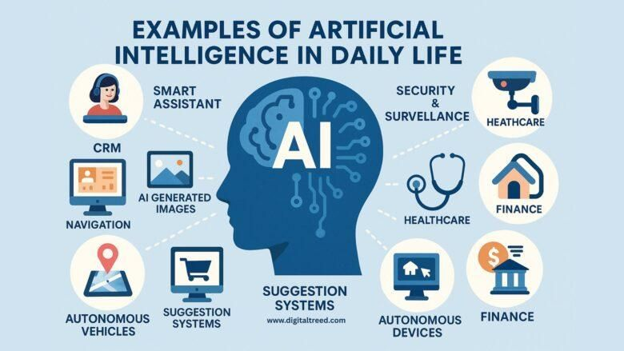

Inteligența artificială, prescurtată AI, este o ramură a informaticii care se ocupă cu dezvoltarea sistemelor capabile să imite anumite forme ale gândirii umane.
Aceste sisteme pot analiza date, pot recunoaște imagini, pot înțelege limbajul, pot lua decizii și pot rezolva probleme complexe. AI nu înseamnă că un calculator „gândește” exact ca omul, ci că poate executa sarcini inteligente pe baza algoritmilor și a datelor.

Sursa: Pinterest, imagine utilizată în scop educațional